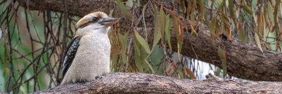

Welcome to the World of Australian Fauna
Australia is home to a wide variety of unique and fascinating animals, many of which are found nowhere else in the world. From the iconic kangaroo and koala to the elusive platypus and the colorful birdlife, Australia's fauna is truly remarkable.
Explore our website to learn more about the incredible animals that inhabit this diverse continent, their habitats, behaviors, and conservation efforts to protect them for future generations.
Want more?
All images on this website are from Penny via Pixabay. Information on the licensing can be found here.
You can find some more information about Australian fauna and conservation efforts at the following websites: